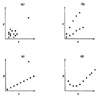
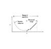

15.6 COMMON MISTAKES IN REGRESSION
The following mistakes are common in regression analysis and often lead to misleading conclusions.
- 1. Not Verifying That the Relationship Is Linear: If the scatter diagram shows a highly nonlinear relationship or, if based on other considerations, it is known that the relationship is nonlinear, a curvilinear relationship should be used. A linear regression for variables that are nonlinearly related may lead to the misleading conclusion that they are not related, for example, if the regression parameters are zero.
- 2. Relying on Automated Results without Visual Verification: A visual check of the scatter diagram is an important step in regression analysis. Unfortunately, this step requires manual intervention and so it is often skipped. The analyst may use a measurement package, which automatically fits a regression model and presents the parameters. This may lead to misleading conclusions that could have been easily avoided by a visual check of the scatter diagram. For example, Figure 15.5 shows several scatter diagrams that will easily produce a regression with a high coefficient of determination but the model may not represent the system behavior. A quick look at the scatter diagram would have helped avoid the problem in each case.
- 3. Attaching Importance to Numerical Values of Regression Parameters: The absolute values of the regression parameters depend upon the dimensions of the corresponding predictor variable. For example, consider the following hypothetical example of predicting CPU time as a function of the number of disk I/O’s and the memory size of a program:
CPU time in seconds = 0.01(number of disk I/O’s)
+ 0.001(memory size in kilobytes)
Here, a careless analyst may conclude that the parameter 0.001 is too small, and therefore, the memory size can be ignored as compared to the number of disk I/O’s. This is wrong, since the same relationship could have been written as either
CPU time in milliseconds 10(number of disk I/O’s)
+ 1(memory size in kilobytes)
or
CPU time in seconds = 0.01(number of disk I/O’s)
+ 1(Memory size in bytes)
In either case, the analyst may not consider that the regression parameter value of I is too small. The lesson is that the absolute value of the regression parameter depends upon the units in which it is meas=4 and two parameters measured in different units cannot be compared. The right way to compare the significance of a regression parameter is by its confidence interval.

FIGURE 15.5 Examples of data that may give high coefficient of determination, but the linear model obtained may not represent the system correctly.
- 4. Not Specifying Confidence Intervals for the Regression Parameters: Most analysts realize that the experiments need to be repeated, since observations are random variables. However, many analysts do not realize that all computations from a sample of n observations am also random. Therefore, a confidence interval should be specified that indicates the variability of the computation.
- 5. Not Specifying the Coefficient of Determination: Least-squares estimation is a well-known technique. Sometimes analysts compute the regression parameters, but they do not specify the coefficient of determination R2. Without R2, it is difficult to deduce the goodness of the regression. An F-test is used even more rarely. However, if R2 is small, often we may not want to use the regression results anyway, and the F-test is not necessary.
- 6. Confusing the Coefficient of Determination and the Coefficient of Correlation: The coefficient of correlation is denoted by R and the coefficient of determination by R2. The coefficient of determination gives the percentage of explained variance; the coefficient of correlation does not. For example, if the coefficient of correlation is 0.8 (R = 0.8, R2 = 0.64), the regression will explain only 64% of the variance and not 80%.
- 7. Using Highly Correlated Variables as Predictor Variables: Analysts often start a multilinear regression with as many predictor variables as possible. This may lead to severe multicollinearity problems. The correlations between predictor variables should be computed. Both variables of a correlated pair should be included in the regression only if this leads to a considerable increase in the significance of the regression.
- 8. Using Regression to Predict Far Beyond the Measured Range: A system may behave differently in different operating ranges. A regression relationship based on measurements in one operating range may not apply far outside the range. In particular, the statistical confidence decreases as we move outside the measured range. Inexperienced analysts, who may not be aware of this, often use small workloads or systems for measurement and then use the regression to predict the behavior for large workloads or systems. In such cases, it is necessary to verify that the relationship will apply beyond the measured range. Also, the predictions should be specified along with their confidence intervals so that the decision makers can decide whether they are willing to take the risk caused by inaccuracies of the predictions.
- 9. Using Too Many Predictor Variables: A common misconception among inexperienced analysts is that using more predictor variables increases the accuracy of predictions. We have already seen in Section 15.1.2 that adding a predictor variable that is correlated with others may decrease the statistical validity of the regression.
Given a set of k measured predictor variables, there are 2k – 1 subsets that can be used. For example, given two variables A and B, we can try A only, B only, or both A and B. One can try all possible subsets and sort them in a decreasing order by the coefficient of determination R2. Of course, the subset giving the maximum R2 is the best subset. But other subsets that are close may be used instead for practical or engineering reasons. For example, if the second best has only one variable compared to five in the best, the second best may be the preferred model.
- 10. Measuring Only a Small Subset of the Complete Range of Operation: The measurements should cover as much of the typical operating range of a system as possible. For example, consider a computer system that supports up to 100 users. It is difficult to set up an experiment with a large number of users, and so the analysts will typically set up experiments with a small number of users, say, 10 or 20. Measurements in a limited range may result in a model that is quite different from that of the model that applies to the whole range. Figure 15.6 shows a hypothetical sample where the regression line that best fits the limited measured range is quite different from what would have been obtained if the whole range had been measured.

FIGURE 15.6 Measuring over only a portion of the range of operation may produce a model that does not apply to the whole range.
- 11. Assuming that a Good Predictor Variable Is Also a Good Control Variable: If two variables are highly correlated, one can be used to predict the other with a high precision. This is true even if one variable does not affect or control the other variable. A good regression model can be used to predict the performance, but if the goal of the study is to find what changes in the system will improve its performance, a regression model will be helpful only if the predictor variable is also a control variable. For example, a regression model of the disk I/O versus CPU time can be used to predict the number of disk I/O’s for a program given its CPU time. However, reducing the CPU time by installing a faster CPU will not reduce the number of disk I/O’s. In other words, CPU time is a predictor but not a controller of the number of disk I/O’s.
If two variables w and y are both controlled by a third variable x, w and y may be highly correlated and would be good predictors for each other. The prediction works both ways: w can be used to predict y and vice versa. The control often works only one way: x controls y but y may not control x.
){kind=link}
){kind=link}
){kind=link}
){kind=link}